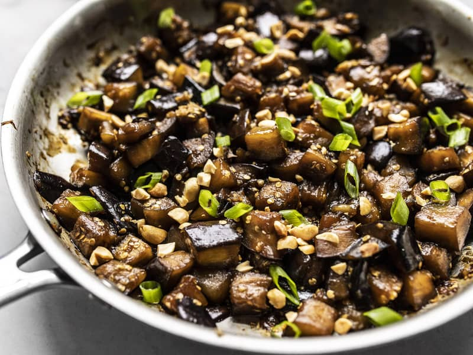

Soy Glazed Eggplant

Description
This Soy Glazed Eggplant stir fry is a super fast and easy vegetarian weeknight dinner, which also meal preps well for the week.
Ingredients
Soy Glazed Eggplant
- 1 eggplant (5-6 cups cubed)
- 2 Tbsp olive oil
- 1/4 cup brown sugar
- 4 cloves garlic, minced
- Tbsp grated fresh ginger
- 1 bunch green onions sliced (for serving)
Sriracha Ranch
- 1/4 cup sriracha
- 1/2 cup ranch dressing
- 1/8 cup freshly squeezed lemon
- 1/8 tsp salt
Instructions
- Cut the eggplant into 3/4-inch cubes. The easiest way to do this is to first slice the eggplant into 3/4-inch slices, then lay each slice flat and slice into 3/4-inch squares.
- Add the olive oil to a large skillet at head over medium. Once hot, swirl the oil to coat the surface of the skillet, then add the eggplant cubes. Cook the eggplant cubes, stirring occasionally, until they are softened (about ten minutes). If the eggplant begins to stick, add a couple tablespoons of water to the skillet to help loosen the eggplant.
- While the eggplant is cooking, prepare the soy ginger glaze. Stir together the soy sauce, brown sugar, minced garlic, and ginger in a bowl.
- Once the eggplant is soft, pour in the soy ginger glaze, making sure to scrape out all the sugar that may have settled to the bottom of the bowl. Continue to stir and cook the eggplant in the skillet, dissolving any browned bits off the bottom, for about 5 more minutes.
- Top the eggplant with sliced green onion before serving. Serve over warm rice with a drizzle of sriracha ranch, if desired.